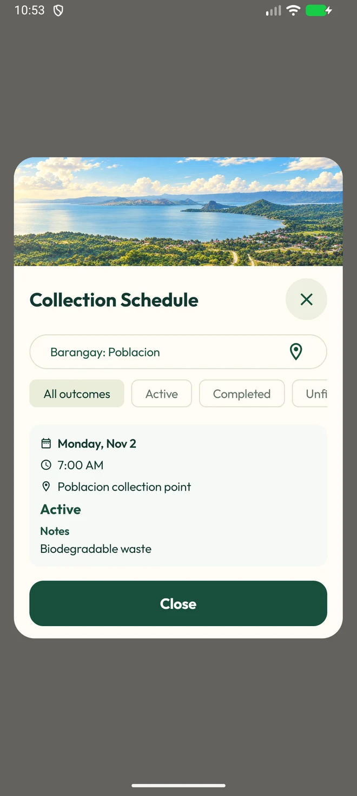

01
Know your collection.
Find your barangay’s posted collection schedule and prepare ahead.
See the schedule featureSmall acts. A greener place to call home.
BALETE, BATANGAS
A little care for the place we call home.
Meet your everyday companion for a cleaner community.

From the streets we walk to the lake we love, a cleaner Balete begins with the things we do every day.
TrashTrack brings collection schedules, waste guidance, community updates, and reporting into one app. A little less guesswork. A little more care.
Meet your everyday companionFollow the road to a cleaner everyday.
Find your barangay’s posted collection schedule and prepare ahead.
See the schedule featureScan an item, explore the guide, and ask a question when you’re unsure.
Try a little sorting exerciseSpot a waste concern? Share the details and follow your report in the app.
Explore community reportingOne app for the everyday ways you care for your community.

See posted dates, collection notes, and schedules for your barangay.
Actual app screens · Illustrative preview data
A little practice makes everyday sorting feel easier. Pick an item, then choose where you think it belongs.
A simple learning example. Always follow your barangay’s collection and segregation guidance.
Bring TrashTrack along for a greener everyday.
TrashTrack is designed for residents of Balete, Batangas. The app brings together barangay collection schedules, waste guidance, reporting, and community events.
Choose “Get TrashTrack for Android,” download the preview APK, and open it on an Android 7.0 or newer device. Your phone may ask you to allow installation from your browser. This is a preview build distributed directly, rather than a Play Store release.
The website shows actual app screens with illustrative preview data. Open the app and check your barangay’s posted schedule for current collection information.
The download on this website is an Android APK. There is no iPhone download offered here.